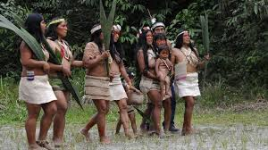
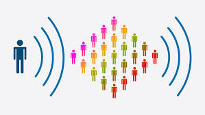

-
Be Responsible!
The Amazon Rainforest has been on fire for the last twenty years. This problem has been greatly affecting the environment and the ecosystem that lives within this vast rainforest. Here are a few things that you can do to help.
-

-
Watch your diet!
Many of the foods that people eat actually are grown on deforested lands. Farmers are burning down areas of the rainforest to harvest crops and raise livestock. By cutting back on foods such aas beef, soybeans, and palm oil, the demand for these resources will diminish, and there will be less of a need for this valuable land in the Amazon.
-
Know what you're buying!
You can also help this situation by purchasing itms that have been recycled. One of the main industries thriving because of the destruction of the rainforest is the mining industry. Precious metals are abundant in the Amazon, and choosing to use recycled materials will reduce mining in this area and will greatly reduce the amount of deforestation in the Amazon.
-
Support Indigenous Groups
Buying products made by indigenous peoples is actually an effective way to reduce deforestation in the Amazon. Doing this will help these communities living in the Amazon Rainforest thrive, and will therefore reduce the amount of harm done to this region.
- 
-
Get to Social Media!
Simply being active and spreading awareness on social media can also encourage others to take action.
- 
-
Email a News Outlet
Emailing a news ooutlet that you frequently visit can help spread the word about this issue. If editors get continual feedback from readers asking to add more information about the issue, they will add bits about the problem, and this will help spread awareness.
-
Share on social media apps
Spreading awareness of these issues on your own is also an extremely effective solution. Getting others to follow your lead in taking action against deforestation will cause good to spread faster than a forest fire!